SmartKav v2 · שלושה קונספטים
כל אב-טיפוס עובד: פתחו וגללו. בכל שורה ארבעה פריימים של גלילה בדסקטופ (1440), ומתחת אותו דבר בטלפון (390). הפירוט המלא ב-concepts.md.
A · לילה אחד (22:40 → 22:45)
השעון מתקדם חמש דקות עם הגלילה, והבלגן נעלם.
פתיחת האב-טיפוס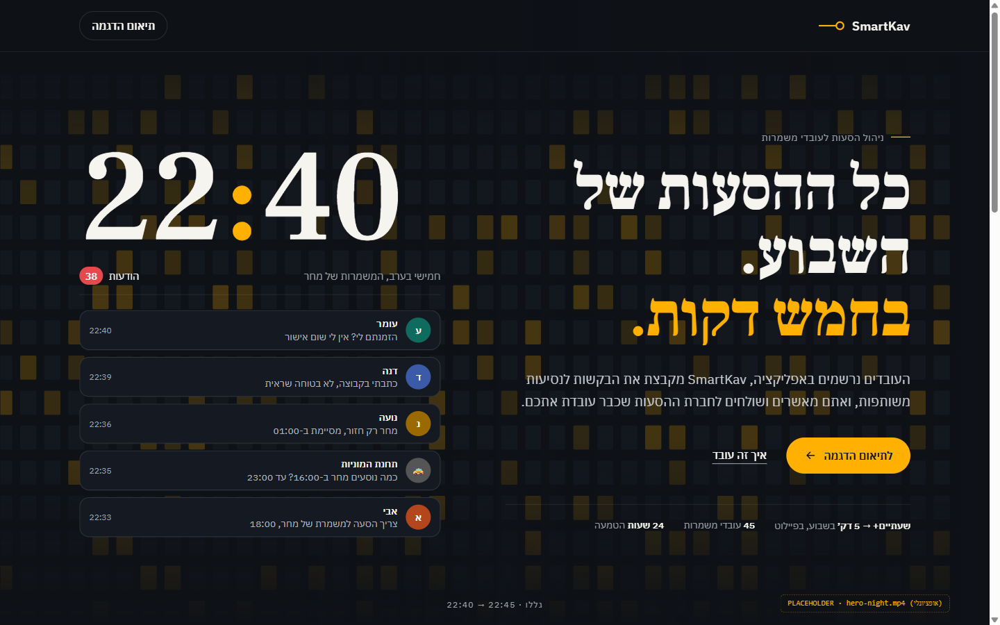
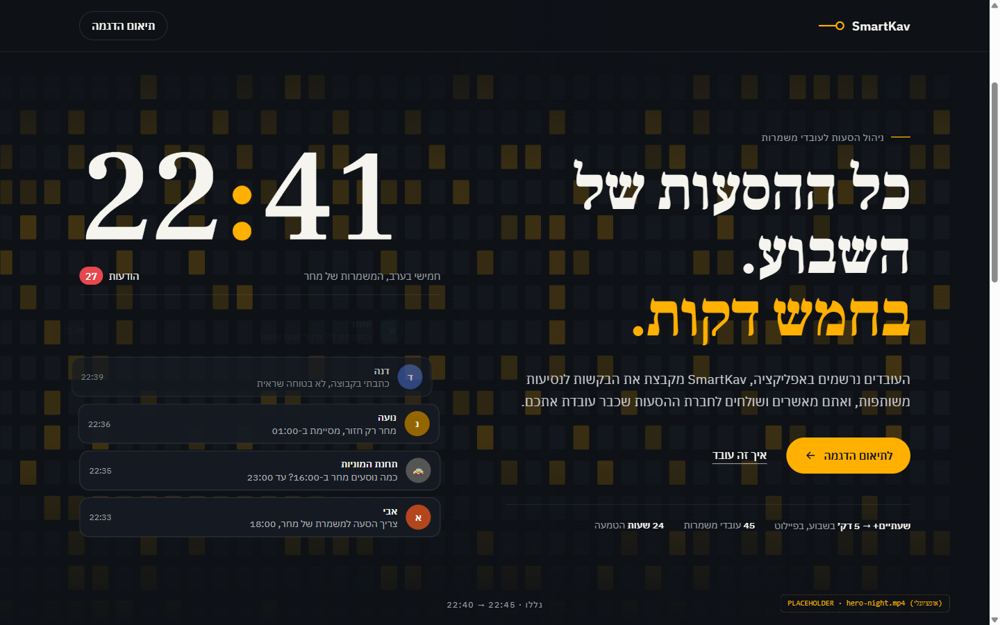
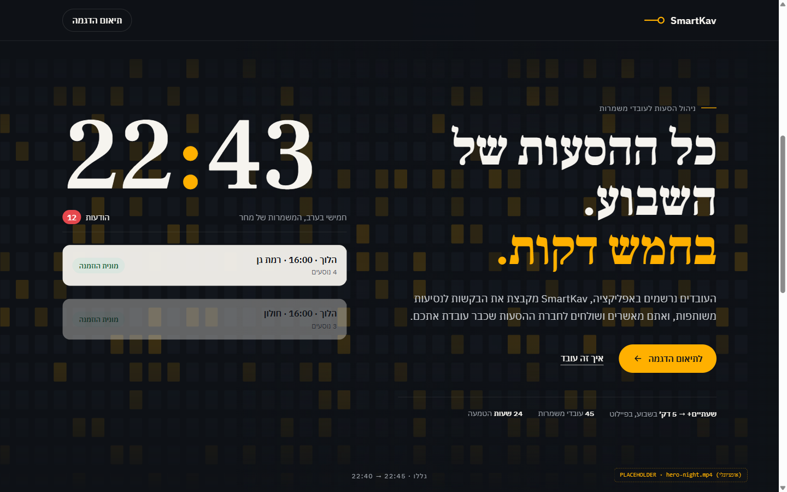
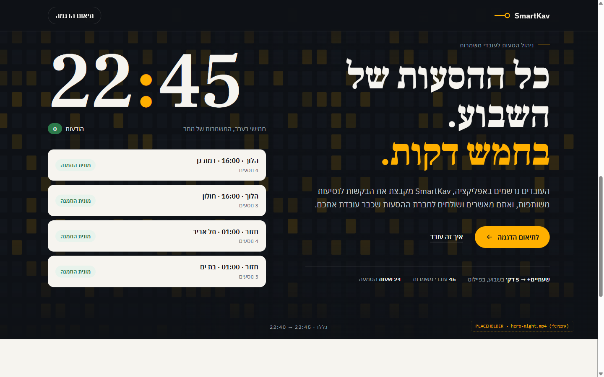
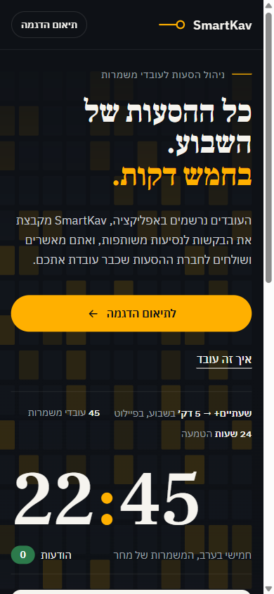
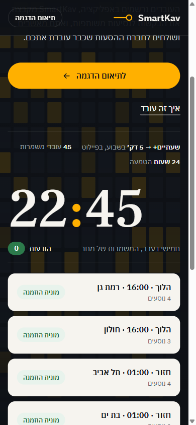
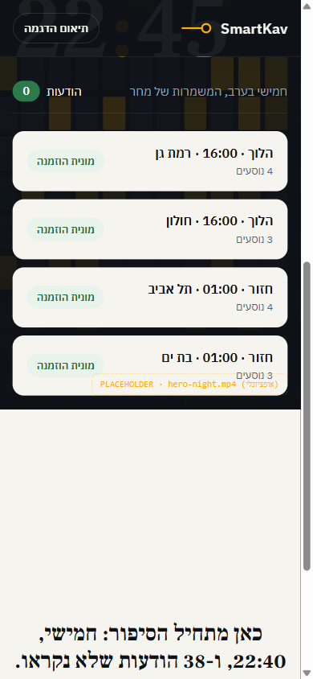
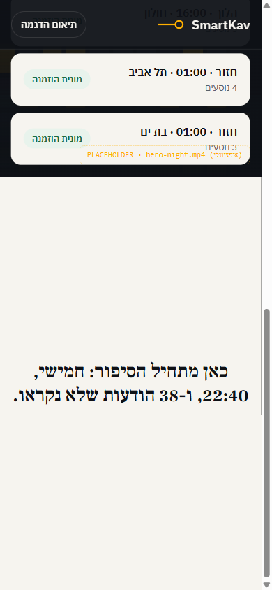
B · הקו (14 → 4)
מפת קווים: 14 עובדים מתחברים לארבע נסיעות. העבירו את העכבר על נסיעה.
פתיחת האב-טיפוס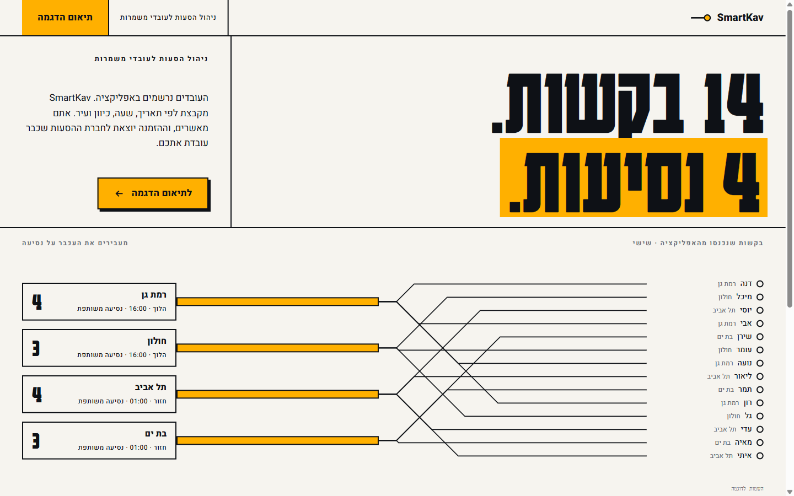
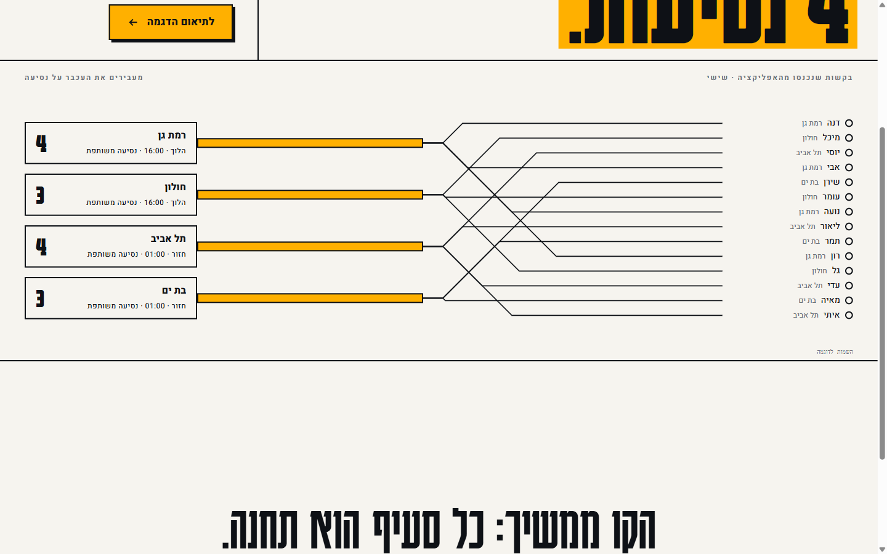
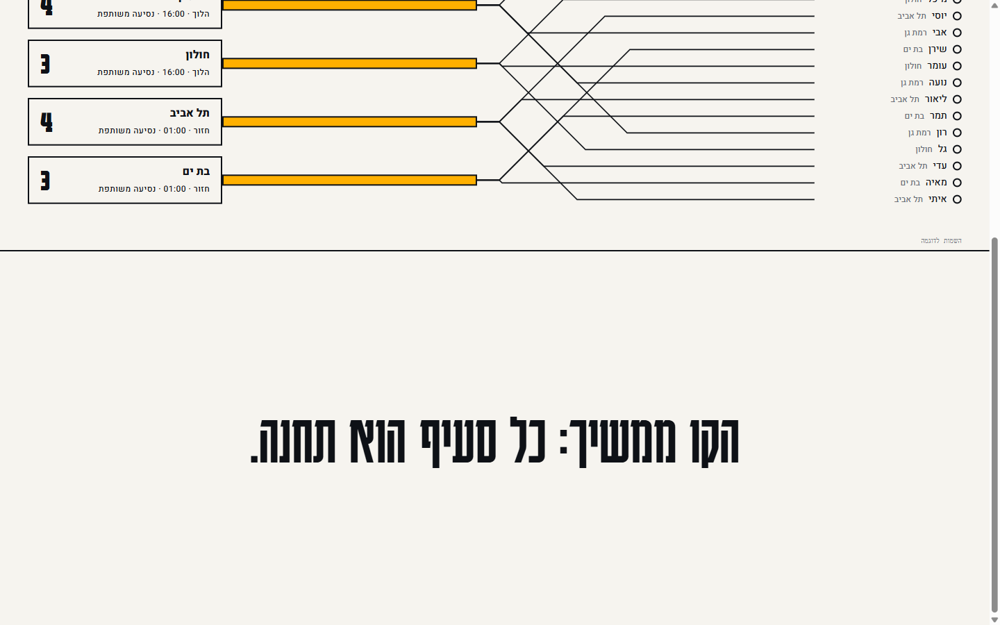

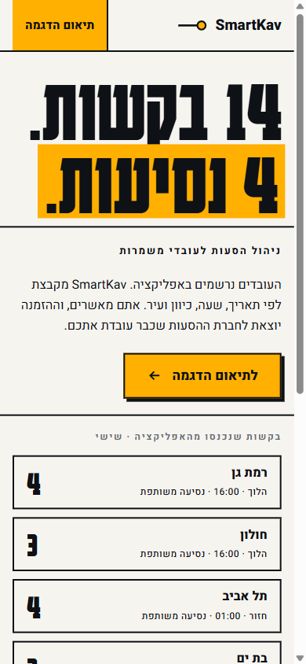
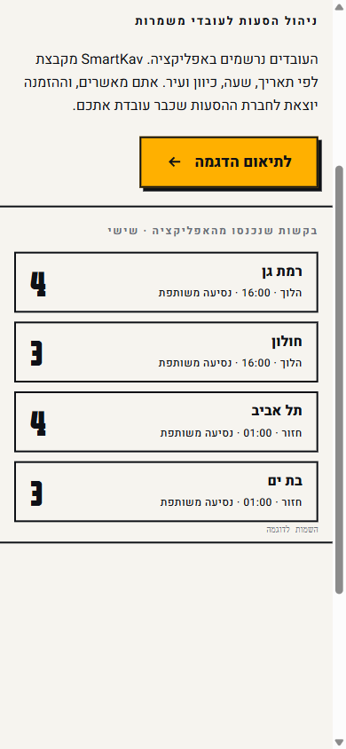
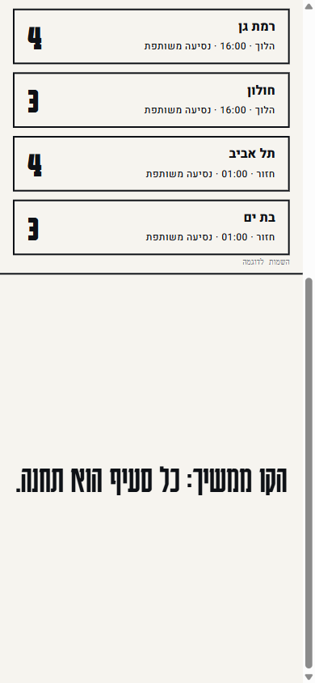

C · 38 (ההצפה)
התראות מציפות את הדף. "השתיקו את הקבוצה" שואב את כולן להזמנה אחת.
פתיחת האב-טיפוס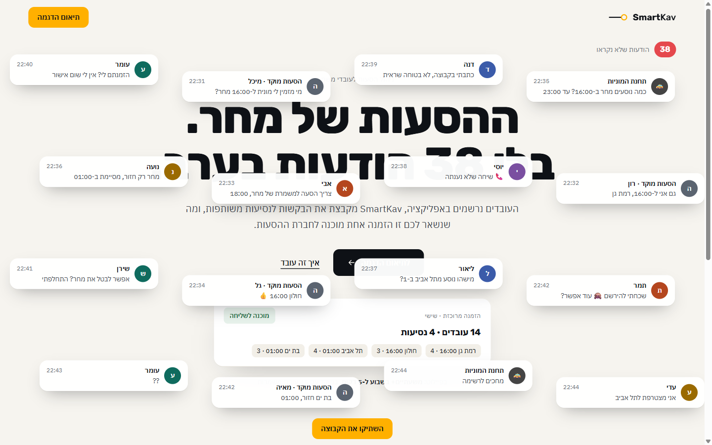
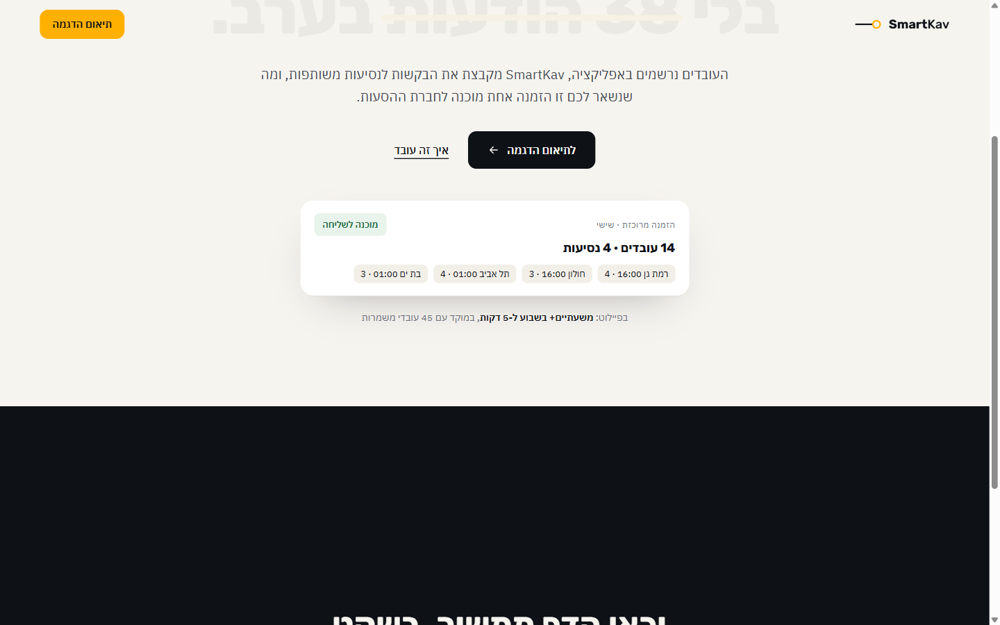
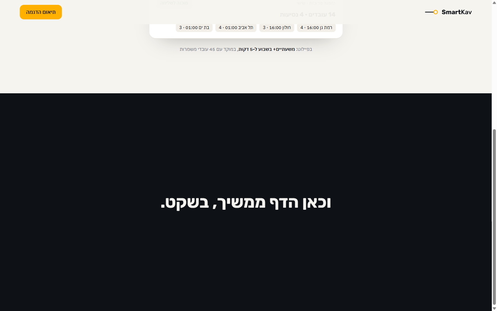

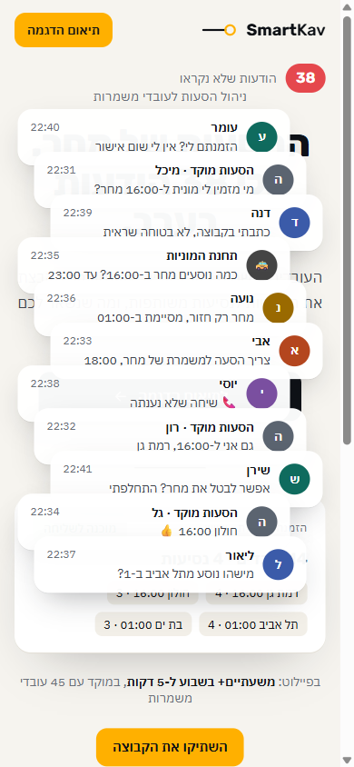
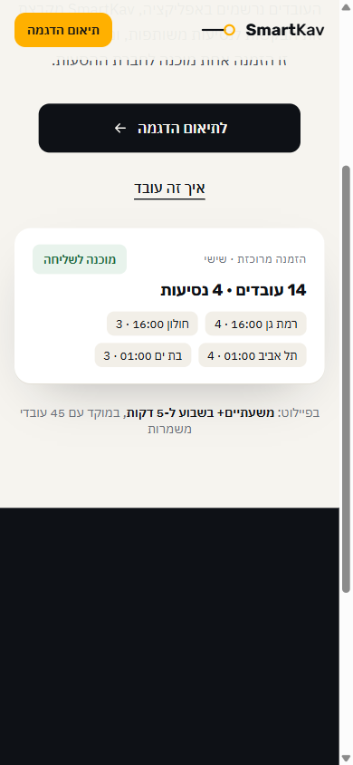

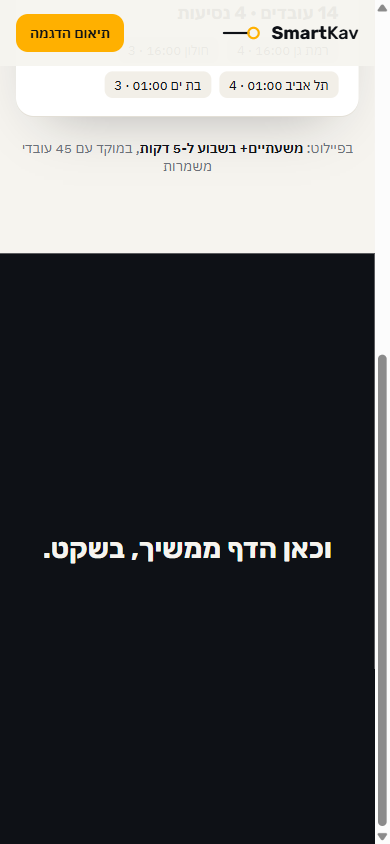